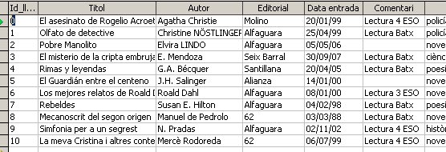
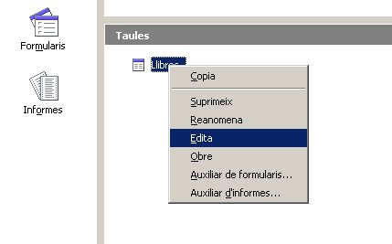
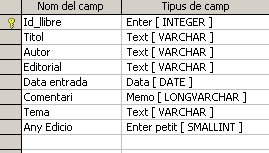
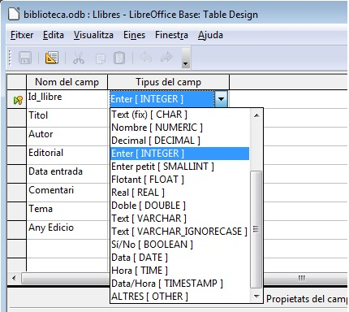
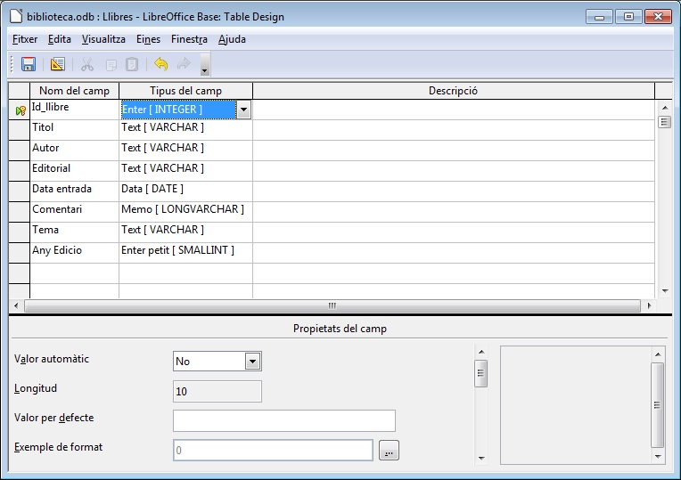
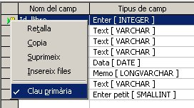

Com hem pogut veure a la pràctica anterior els objectes que podem crear dintre d'una base de dades són: Taules, Consultes, Formularis i Informes.
L'objecte fonamental és la Taula. La Taula és la que conté la informació que més tard tractaran d'una o altra manera els altres tres.
La informació dintre de la taula es divideix en files i columnes. Cada fila correspon a un registre, en el cas de la Biblioteca i de la Taula Llibres, cada registre ens dona informació sobre un Llibre. Cada Columna correspon a un Camp. Cadascun dels quals ens dóna informació sobre un atribut dels diferents registres. En el cas de la taula Llibres, tenim els camps Títol, Editorial…
És fonamental abans de crear la taula pensar quins seran els camps que la composaran, és a dir, reflexionar sobre la informació que volem de cada registre.
No ens hem de preocupar molt si quan es crea la taula ens hem deixat un camp, ja que podem modificar el disseny de la mateixa en qualsevol moment.

En aquesta imatge ja coneguda podem identificar els elements que caracteritzen a la taula Llibres.
Ara optarem pel modo disseny d'aquesta taula perquè pugueu veure el procés de definir-la.
Per accedir al disseny d'una taula feu un clic sobre la taula Llibres amb el botó dret del ratolí i seleccioneu Edita.

Dintre de la finestra del disseny de la taula podem identificar tres columnes a la part superior. La primera columna correspon al Nom del camp, la segona al Tipus de camp, que fa referència al tipus de dada que emmagatzemarà, i la tercera serveix per fer una petita Descripció del camp (si es considera necessari, per tal que un altre possible usuari de la base de dades entengui, si no és evident la seva característica).

Fent un clic sobre la concreció del tipus triat(Tipus de camp) en qualsevol dels camps es desplegarà la llista de tota la tipologia possible.

A la part inferior de la finestra del disseny podeu veure un apartat anomenat Propietats del camp, on a mesura que canvieu de camp, a la part superior, podreu veure com canvien els valors que es mostren.

Al camp Id_Llibre podeu veure que té a la part esquerra (zona de selecció de registres) una clau. Aquesta indica que el camp conté una clau primària, i això significa que el valor d'aquest camp no podrà estar repetit i que possiblement servirà per establir relacions amb altres taules que es puguin crear dintre de la mateixa base de dades. Aquest concepte quedarà àmpliament desenvolupat al següent mòdul.

El tipus de camp limita el tipus de valor que pot emmagatzemar un camp i a més marca la mida d'espai de memòria que ocuparà el valor introduït.
Per exemple un camp que és de tipus Text, no pot guardar dades que continguin dates. Si podria guardar xifres numèriques enteres com a dígits alfabètics. Un exemple de camp tipus text que recull xifres numèriques seria el camp NIF, que no hauria de ser numèric si volem que l'usuari introdueixi la lletra del NIF.
Per tant quan creem el disseny d'una taula tal com es farà a la següent pràctica hem de pensar bé el tipus de camp que volem en cada camp, tenim present el tipus d'informació que deurà guardar.
Ara us presentem una llista de la principal tipologia de Camps amb les seves característiques més importants:
Existeixen altres tipus de camps com per exemple el tipus [BIGINT] per escriure valors enters molt grans o [BINARY] per emmagatzemar dades binàries de mida fixa, però no s'utilitzen gaire.
Afegiu un nou camp a la taula Llibres: Prestat, de tipus Sí/No.

|
|

|
|